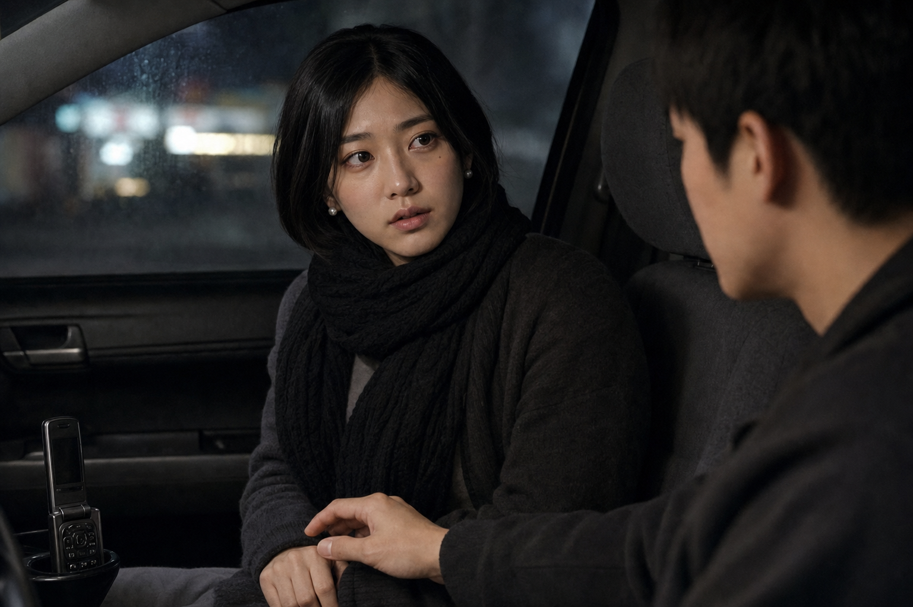

154. 숨 쉬는 곳
1월 23일 오후, 초연은 다시 전화를 걸었다.
용식은 운전석에 앉아 진동을 봤다. 수원역 뒤쪽 골목 주차장은 차들이 빽빽했고, 유리창 너머로 사람들 어깨가 지나갔다. 폴더폰 화면에는 초연의 이름이 떴다가 꺼지고, 다시 떴다가 꺼졌다. 그는 손을 뻗었다가 멈췄다. 받으면 얘기해야 했다. 얘기하면 끝을 말해야 할 수도 있었다. 끝을 말하지 않으려면 또 변명해야 했다.
진동이 멈췄다.
잠깐 조용했다가 문자가 왔다.
용식은 읽었다. 답하지 않았다. 답을 고르는 일 자체가 벌처럼 느껴졌다. 그는 시동을 끄고 차 안에 그대로 앉아 있었다. 히터 바람이 약하게 나오다가 멈췄고, 유리창 안쪽에 희미한 김이 앉았다.
조수석 문이 열렸다.
서윤이 들어왔다. 회색 목도리 대신 검은 니트 머플러를 하고 있었다. 그녀는 앉자마자 안전벨트를 매지 않고, 문을 닫은 뒤 손을 무릎 위에 올렸다.
[한서윤] "왜 이렇게 멀리 세웠어요?"
[김용식] "사람 많은 데는 좀."
[한서윤] "누가 볼까 봐요?"
용식은 대답 대신 손으로 핸들을 문질렀다. 서윤은 그 짧은 침묵만으로도 충분하다는 듯 창밖을 봤다.
[한서윤] "아직도 그렇구나."
[김용식] "그런 뜻 아니에요."
[한서윤] "그런 뜻 아닌 말이 너무 많아요."
차 안은 좁았다. 카페보다 더 좁고, 거리보다 더 가까웠다. 서윤의 향이 히터가 꺼진 공기 안에 가만히 퍼졌다. 도쿄 호텔 방에서 맡았던 향과는 달랐다. 한국의 겨울, 수원역 뒤 골목, 차 안의 습기와 섞여 조금 더 현실적이었다.
폴더폰이 다시 진동했다.
이번엔 서윤도 고개를 돌리지 않았다. 보지 않으려는 태도였다. 그게 용식에게는 이상하게 더 큰 압박이었다. 확인하지 않는 사람 앞에서는 숨길 말이 더 많아졌다.
[한서윤] "받지 마요."
[김용식] "아까는 받으라면서요."
[한서윤] "지금은 내가 말할 거라서요."
용식은 폴더폰을 컵홀더에 내려놓았다. 진동이 플라스틱 안에서 짧게 울렸다. 서윤은 그 소리가 끝날 때까지 기다렸다가 말했다.
[한서윤] "나한테 기대고 싶은 거면, 나를 숨 쉬는 곳 취급하지 마요."
말이 천천히 떨어졌다. 용식은 눈을 깜빡였다.
[김용식] "숨 쉬는 곳?"
[한서윤] "그 사람한테 답답하면 나한테 오고, 나한테 뭔가 물어보면 다시 그 사람 핑계 대고. 나 그거 되게 잘 알거든요."
[김용식] "제가 그렇게까지."
[한서윤] "했어요."
서윤은 말을 자르지 않았지만, 문장을 닫아 버렸다. 용식은 입을 다물었다.
[한서윤] "도쿄에서도 그랬어요. 내가 옆에 있는데 사진 찍을 땐 없는 사람 됐고, 나한테는 같이 있는 것처럼 굴다가 한국에서 전화 오면 바로 다른 사람이 됐고."
[김용식] "미안해요."
[한서윤] "사과는 들었어요. 여러 번."
그 말도 맞았다. 사과는 쉬웠다. 사과하면 잠깐 고개 숙이면 됐다. 하지만 관계의 이름을 묻는 말은 고개 숙이는 걸로 넘어가지 않았다. 용식은 조수석 쪽을 바라봤다. 서윤은 창밖을 보고 있었지만, 어깨가 아주 조금 굳어 있었다.
[김용식] "지금은 서윤 씨가 편해요."
서윤이 웃었다. 이번에도 좋은 웃음은 아니었다.
[한서윤] "그 말도 좀 잔인한 거 알아요?"
[김용식] "왜요."
[한서윤] "편하다는 건, 힘들 때 앉는 의자 같잖아요."
용식은 말을 잃었다. 그는 정말로 편하다고 생각했다. 초연 앞에서는 계속 설명해야 했고, 의심을 막아야 했고, 같은 각도로 사진을 보내야 했다. 서윤 앞에서는 적어도 자기가 지친 사람이라는 걸 숨기지 않아도 됐다. 그런데 서윤은 그 편함의 이름이 싫다고 했다.
[김용식] "그럼 뭐라고 해야 돼요."
[한서윤] "그걸 왜 나한테 물어요."
서윤은 드디어 용식을 봤다.
[한서윤] "용식 씨가 말해야죠."
그녀가 아직 그를 용식 씨라고 부르는 게 이상하게 아팠다. 도쿄에서 밤이 깊어지면 말끝이 흐려지고 호칭이 잠깐 사라질 때도 있었다. 그런데 한국에 돌아오자 서윤은 다시 호칭을 세웠다. 거리였다. 자신이 함부로 넘을 수 없는 선.
용식은 손을 뻗었다. 조수석 위에 놓인 서윤의 손등이 보였다. 손끝이 차가워 보였다. 그는 망설이다가 서윤의 손을 잡았다.
서윤은 빼지 않았다.
하지만 바로 잡아 주지도 않았다. 손을 맡긴 채, 그가 뭘 하는지 보는 사람처럼 가만히 있었다.

[김용식] "지금은 서윤 씨가 제일 생각나요."
[한서윤] "지금은."
[김용식] "네. 지금은."
[한서윤] "그 다음은요?"
용식은 서윤의 손을 놓지 못했다. 손바닥 사이가 조금씩 따뜻해졌다. 그 따뜻함 때문에 말이 더 어려워졌다. 가까워지는 건 쉬운데, 가까워진 이유를 말하는 건 어려웠다.
[김용식] "다음도 보고 싶을 것 같아요."
서윤의 시선이 조금 흔들렸다. 그녀는 손을 빼지 않은 채 고개를 돌렸다. 창밖으로 지나가는 사람들의 코트 자락, 택시 불빛, 편의점 앞 김이 오르는 어묵통이 보였다.
[한서윤] "그 말 믿고 싶게 하지 마요."
[김용식] "믿으면 안 돼요?"
[한서윤] "믿었다가 또 사진 밖으로 밀리면, 그때는 진짜 못 버텨요."
용식은 서윤의 손을 조금 더 세게 잡았다.
[김용식] "안 밀게요."
말하고 나서, 그는 그 말이 얼마나 큰지 바로 알았다. 안 밀겠다는 건, 초연 앞에서 서윤을 숨기지 않겠다는 뜻일 수도 있었다. 그런데 그는 아직 초연에게 아무것도 끝내지 않았다. 말은 이미 앞서 갔고, 현실은 뒤에서 발목을 잡고 있었다.
폴더폰이 또 진동했다.
이번에는 초연의 전화가 아니라 문자였다.
용식은 손을 놓지 않은 채 화면을 봤다. 서윤도 이번에는 화면을 봤다. 문자 내용까지 보려는 건 아니었다. 그저 이름이 누구인지 확인할 만큼의 시선. 그리고 바로 고개를 돌렸다.
[한서윤] "답해요."
[김용식] "지금요?"
[한서윤] "나 붙잡고 있으려면, 적어도 그 사람한테 도망치는 방식으로는 하지 마요."
용식은 손을 놓았다. 서윤의 손이 빠져나가자 차 안이 갑자기 넓어졌다. 그는 문자를 썼다.
전송.
답장은 금방 왔다.
용식은 더 쓰지 않았다. 쓸 말이 없었다.
서윤은 안전벨트를 매지 않은 채 차 문 손잡이를 만졌다.
[한서윤] "오늘은 갈게요."
[김용식] "잠깐만요."
[한서윤] "왜요."
[김용식] "조금만 더 있다 가요."
[한서윤] "있으면 뭐가 달라져요?"
용식은 대답 대신 다시 손을 잡았다. 이번엔 서윤이 조금 늦게, 아주 조금 손가락을 접어 그의 손을 잡아 주었다. 그 짧은 반응 하나에 차 안 공기가 달라졌다. 말로 정리되지 않은 것들이 손바닥 사이로 옮겨 붙었다.
한동안 아무 말도 하지 않았다. 라디오도 켜지 않았고, 시동도 걸지 않았다. 밖에서는 사람들이 바쁘게 지나갔고, 차 안에는 두 사람의 숨소리만 남았다. 용식은 이 침묵이 좋았다. 그런데 이 침묵이 좋다는 사실이 다시 누군가에게는 배신이라는 것도 알았다.
서윤이 먼저 말했다.
[한서윤] "용식 씨."
[김용식] "네."
[한서윤] "나 진짜 사람 숨 쉬게 해 주는 곳 같은 거 하기 싫어요."
[김용식] "알아요."
[한서윤] "모르는 것 같아서 하는 말이에요."
그녀의 말끝이 낮아졌다.
[한서윤] "기대고 싶으면 기대요. 근데 기대는 척만 하고 도망가지는 마요."
용식은 고개를 끄덕였다. 대답을 잘했다고 생각하지 않았다. 사실은 아무것도 해결되지 않았다. 초연에게는 설 지나고 보자고 했고, 서윤에게는 손을 잡았다. 두 행동은 같은 밤에 벌어졌고, 둘 다 진심처럼 느껴졌다.
그게 문제였다.
서윤을 내려 주고 돌아오는 길, 초연에게서 마지막 문자가 왔다.
용식은 신호 대기 중 화면을 오래 봤다. 초록불이 켜졌고, 뒤차가 짧게 경적을 울렸다. 그는 핸들을 잡고 앞으로 나아갔다.
답장은 하지 않았다.
그날 밤 집에 돌아와 침대에 누웠을 때, 그의 손에는 아직 서윤의 체온이 남아 있었다. 이상하게 초연의 문장보다 그 체온이 더 선명했다. 그는 천장을 보고 한참 누워 있다가 폴더폰을 열었다.
서윤에게 문자를 썼다.
잠깐 뒤 답장이 왔다.
그리고 한 줄이 더 왔다.
용식은 오래 보고 있다가 답했다.
전송하고 나니 방 안이 더 조용해졌다. 그는 폴더폰을 닫았다. 초연의 이름은 화면 밖으로 사라졌고, 서윤의 문장만 손끝에 남았다.
아니었어요.
그 말이 얼마나 오래 버틸 수 있을지는 아직 몰랐다.